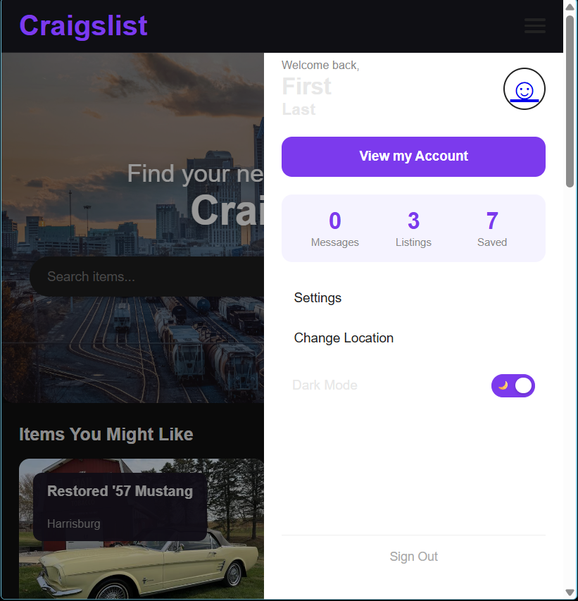

Week 12 – Accessibility & Dark Mode
Overview
In Week 12, we focused on improving accessibility by enhancing readability, contrast, and user control. We implemented a fully functional dark mode and ensured the interface remains usable across different viewing conditions and user needs.
My Contribution
I contributed to help implement the dark mode experience and ensuring that the interface remains readable and consistent across both light and dark themes.
Dark Mode Implementation

A toggle was added to allow users to switch between light and dark themes. The change applies across the entire interface, providing a consistent experience regardless of page.
- Toggle clearly indicates current mode
- Theme updates applied globally across pages
- User preference persists during session
Improved Color Contrast
Colors were adjusted to meet accessibility standards for contrast. Text remains readable against both light and dark backgrounds, ensuring compliance with WCAG guidelines.
- Minimum 4.5:1 contrast ratio for body text
- 3:1 contrast ratio for larger text
- Improved readability in low-light environments
Responsive Typography
Typography was updated using relative units (rem and em) to ensure readability across different screen sizes and zoom levels.
- Text remains readable at 200% zoom
- No layout breakage when scaling text
- Consistent spacing and hierarchy across devices
User Control & Accessibility
Providing users with control over how they view the interface improves usability and accessibility. Dark mode allows users to reduce eye strain and adapt the interface to their environment.
Design Impact
These improvements make the interface more inclusive and usable for a wider range of users. By focusing on contrast, readability, and user control, the design ensures a more accessible and comfortable experience.